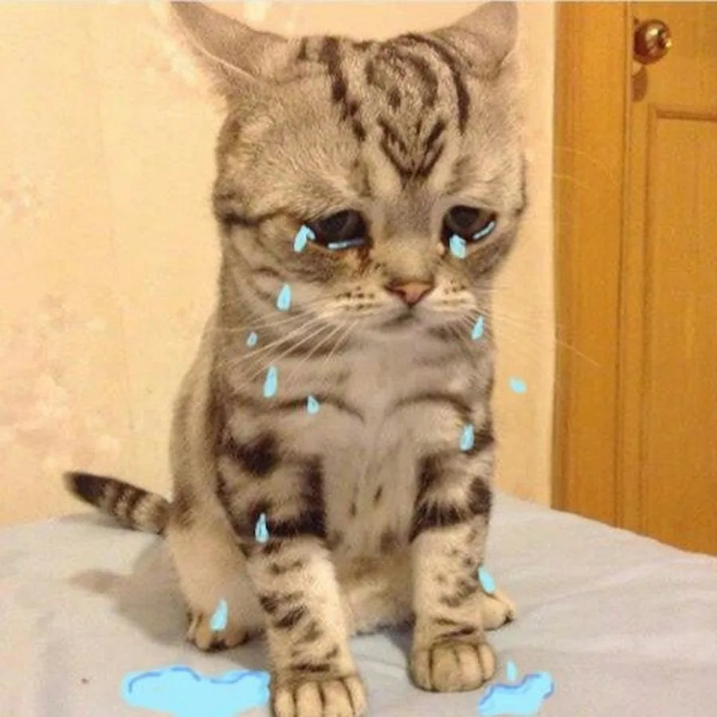

Каждый котенок заслуживает тепла и заботы
Мы спасаем, лечим и находим дом для бездомных котят. Присоединяйтесь к нашему движению и помогите изменить жизни этих маленьких созданий.
Как я могу помочь?

Послушайте наших котят
Поддержите нас одним сканированием
Отсканируйте QR-код, чтобы сделать пожертвование или узнать больше о нашей работе
Или нажмите на кнопку: Помочь котятам
1,250+
Спасенных котят
800+
Нашедших дом
50+
Волонтеров
7
Лет работы